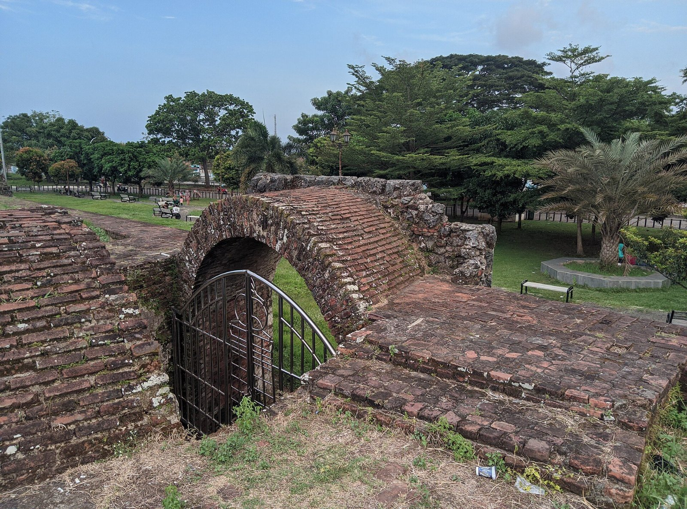
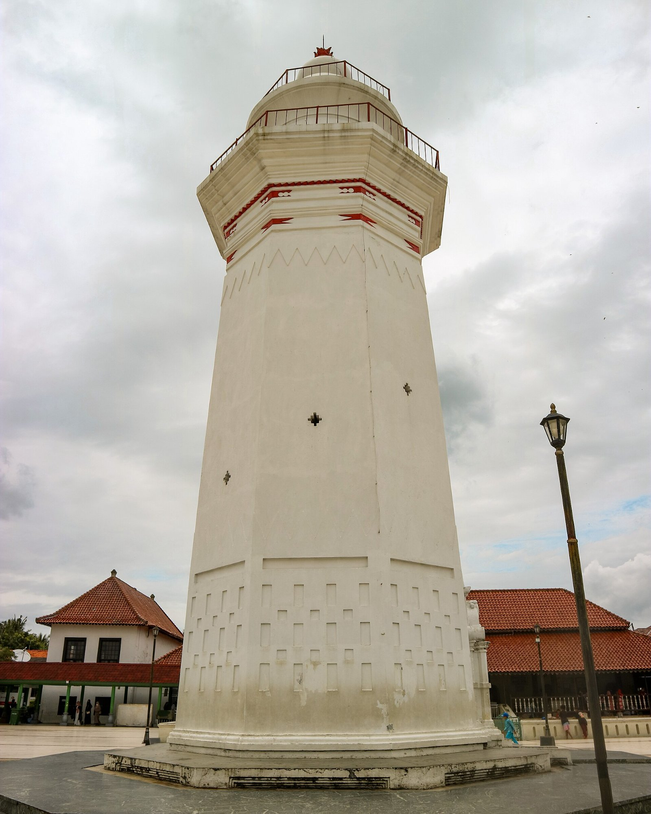
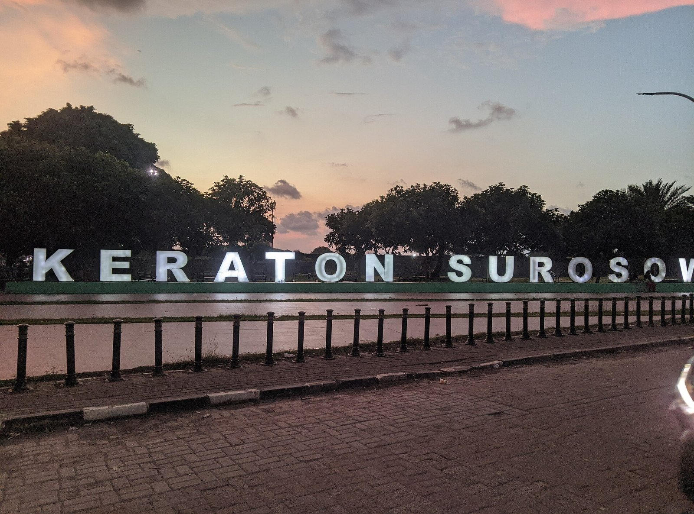
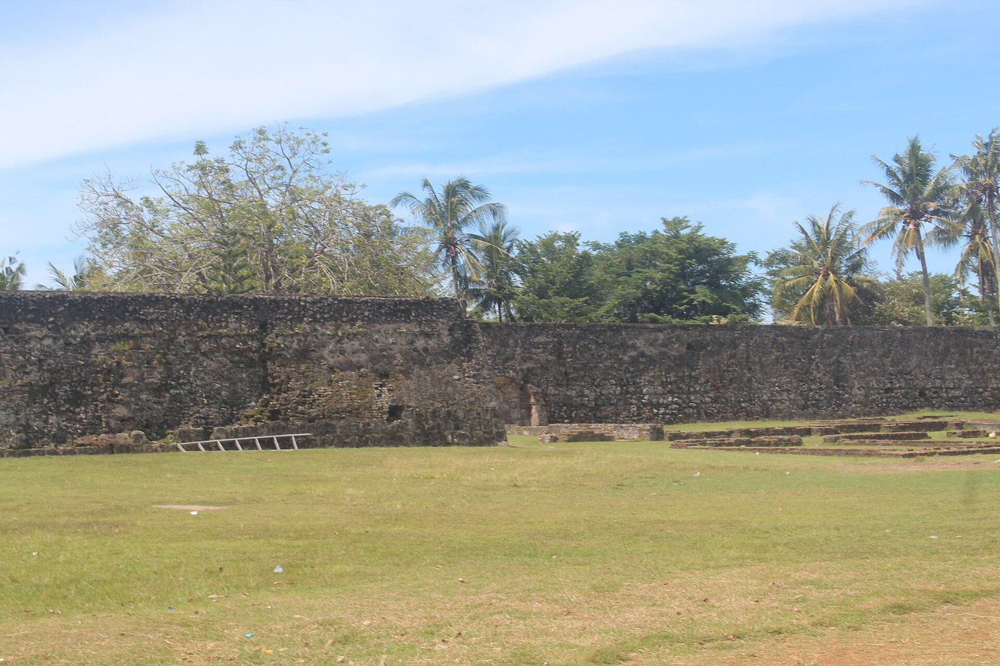
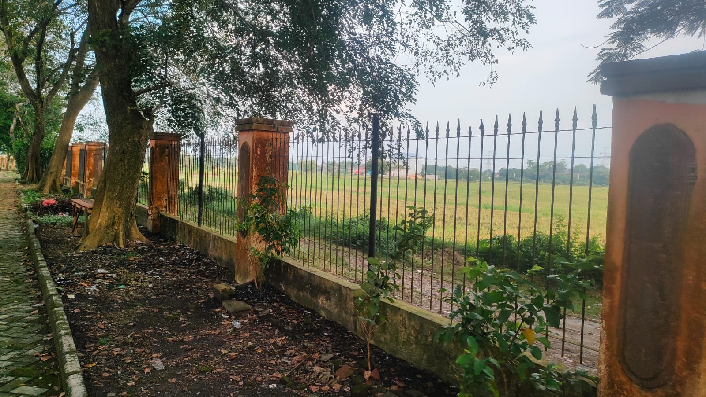
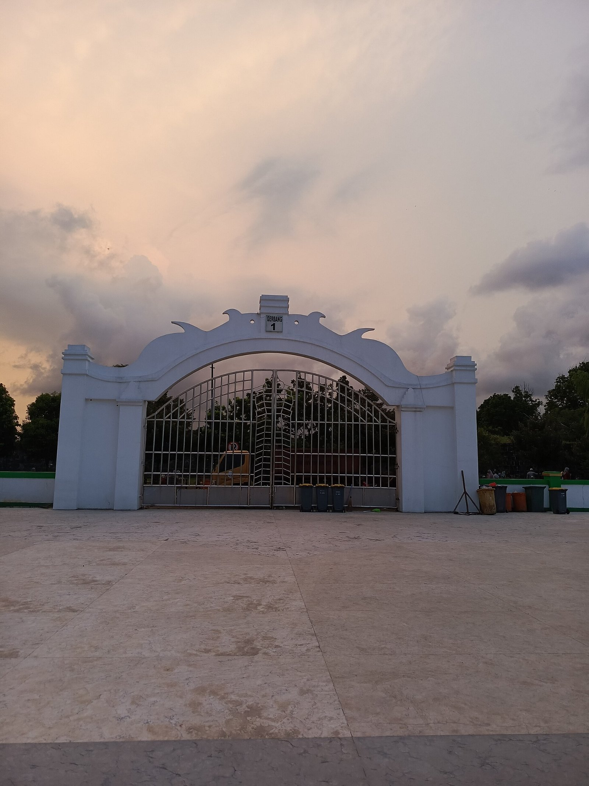
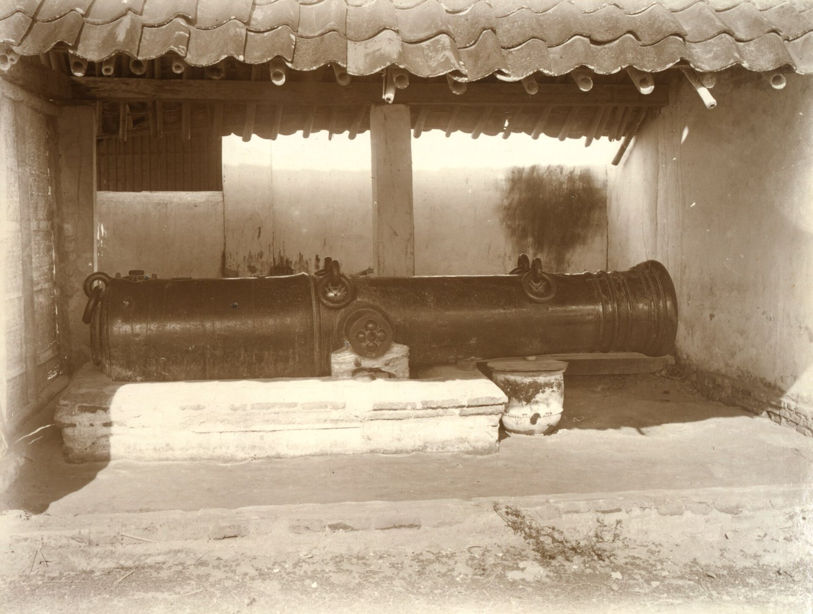
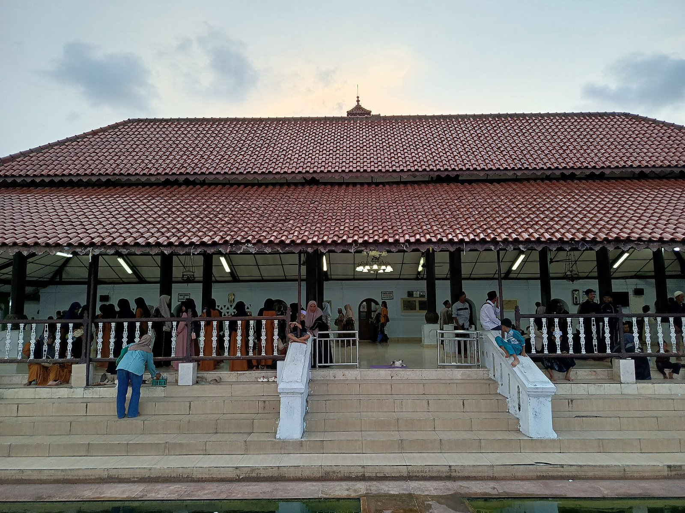
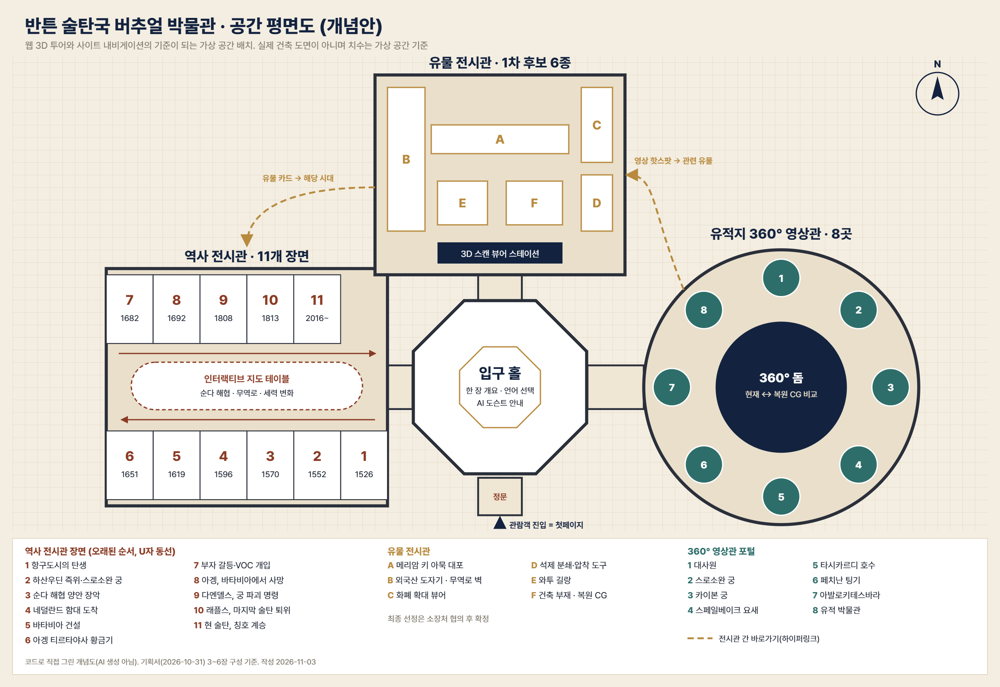
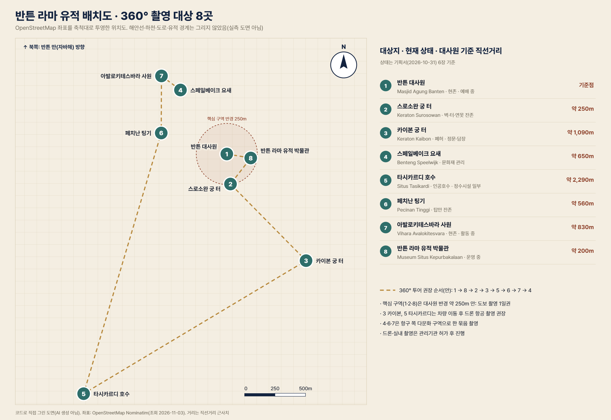

무너진 스로소완 궁과 카이본 궁, 국제 무역항의 유물과 역사를 한 곳에서. 설치 없이 브라우저에서 바로 들어가는 웹 박물관입니다.
관심에 따라 세 전시관을 고르세요. 유물 카드에서 해당 시대로, 유적 영상에서 관련 유물로 언제든 넘어갈 수 있습니다.
연표는 기획서(Wikipedia: Banten Sultanate 기준) 그대로. 자료마다 연도가 다른 항목은 감수 후 확정합니다.
수난 구눙 자티가 반튼을 정복, 반튼 라마가 새 수도로
치르본에서 독립, 스로소완 궁 건립
자바 서부와 수마트라 남부
더 하우트만의 네덜란드 함대 도착
쿤이 바타비아를 세움
아겡 티르타야사 시대, 후추·설탕 자유무역
부자 갈등과 VOC 개입, 스페일베이크 요새
바타비아에서 포로로 사망
다엔델스, 스로소완 궁 파괴 명령
래플스가 술탄 샤피우딘 퇴위
현 술탄 즉위, 칭호 계승
1985년 개관, 1,000점 이상을 가진 반튼 라마 유적 박물관 소장품에서 1차 후보 6점. 최종 선정은 소장처와 협의.
약 2.5m 오스만 양식 대포
3D 스캔중국·일본·베트남·중동·유럽산
3D + 무역로 지도현지·외국 교역 통화
고해상 확대 뷰어후추·설탕 산업의 흔적
3D 스캔궁정 석조물 · 용도 감수 필요
3D + 현장 360°지붕 장식, 벽돌, 조각상
3D + 복원 CG막대를 좌우로 끌어 추정 복원과 오늘의 모습을 비교합니다(데모: 실제 서비스는 같은 시점의 360° 촬영본과 고증 CG를 겹칩니다).

추정 복원 · AI현재 · 스로소완 궁 터
01반튼 대사원
02스로소완 궁 터
04스페일베이크 요새
05타시카르디 호수
—대사원 정문 (석양)
—키 아묵 대포 (19세기 말 사진)
—대사원 정면왼쪽은 웹 박물관의 가상 공간 구성(입구 홀 + 3관), 오른쪽은 실제 반튼 라마 8개 유적의 위치입니다.


스로소완 궁, 대사원과 광장, 항구와 요새가 한눈에. AI 생성 추정 조감도로, 실제 배치·규모는 고증 CG에서 확정합니다.